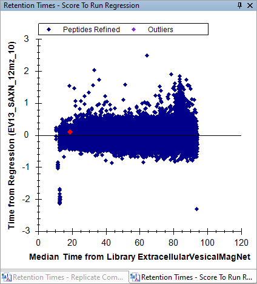

To start this tutorial, download the following ZIP file:
https://skyline.ms/tutorials/PeakImputationDia.zip
Extract the files in it to a folder on your computer, like:
C:\Users\brendanx\Documents
This will create a new folder:
C:\Users\brendanx\Documents\PeakImputationDia
The "Peptide Areas" is a report definition which is included in the 2025-DIA-Webinar-MagNet document. The report has one row per Peptide in the document, and the Normalized Area values for each replicate are displayed in different columns. The Normalized Area column shows the peak areas for the peptide normalized according to the "Normalization Method" setting on the Quantification tab in the Peptide Settings dialog. In this document, the Normalization Method is set to "Total Ion Current". Many of the Normalized Area values are "#N/A" in this grid because a chromatogram peak has not been chosen.

This displays the results of the "EV-Enrich-Peptide" group comparison. The number of rows in the grid is much less than the total number of peptides in the document because the replicates where no peak was chosen for a peptide are excluded from that peptide's group comparison. To display the volcano plot, do the following:

The missing peptide peaks are in replicates where the DIA-NN peptide search engine was unable to confidentally identify a peak. In general, the replicates with lower abundance will tend to be the ones where the peak was not confidentally identified, but certainly not in all cases. You can modify the group comparison to tell Skyline to treat the replicates with missing peaks as if the peak had zero area.

After you make that change to the group comparison definition, the grid will have one row for each peptide in the document and the volcano plot will have more points.

The volcano plot remains zoomed in on the subset of data that existed before the change to the group comparison settings. Closing and reopening the volcano plot will reset its display to the default amount of zoom for the data that is displaying.

In the volcano plot, Skyline displays the peptides which are currently selected in the Targets tree.

Skyline selects the peptide associated with that point.


No peak has been chosen for this peptide in this replicate. Skyline has the ability to tell you where on this chromatogram the peak from the best-scoring replicate could be found.

Now we are going to tell Skyline to set the peak boundaries for all missing peaks based on the peak boundaries of the best-scoring replicate.

Skyline has now set the integration boundaries to coincide with the green rectangle.

The Retention Times graph shows peak boundaries all replicates.

Right-click on the chromatogram graph and choose Align to Library 'PeakImputationDemo'

